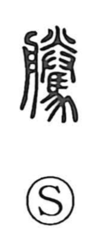

騰

Kun: agaru, ageru, noboru | On: tou
to rise ・ to surge ・ to leap
Explanation
騰 is a phono-semantic character: the horse element supplies the sense of vigorous motion, while 朕 serves as the phonetic that gives the reading tou—a pattern shared by characters like 滕 and 縢. Early lexica gloss it with the idea of a relay station, evoking the changing of horses along the road. In the Book of Odes, the line 百川沸騰 vividly describes rivers “boiling up,” capturing the swelling, upward force implicit in the graph. At its core, 騰 evokes a horse bounding up and down—“to spring, to rise”—and by extension any sudden surge or increase, as seen in modern compounds such as 騰貴 and 暴騰.